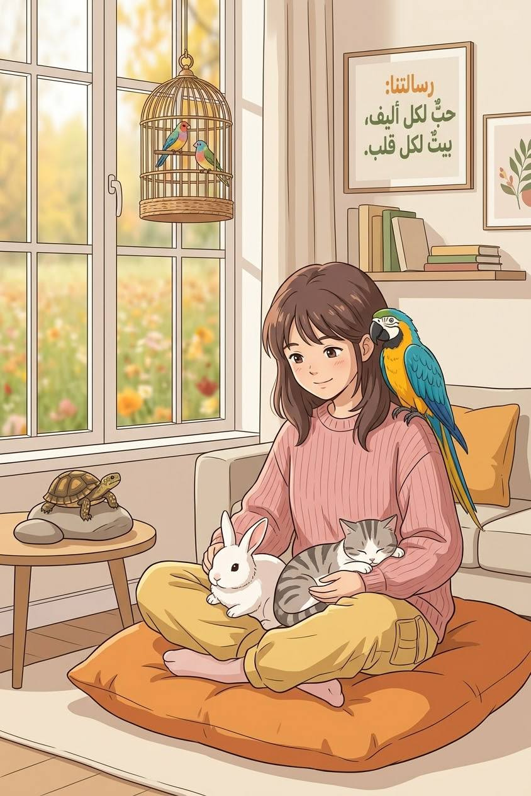

About Us

We help every animal waiting for a home find a family of its own.
Our Story
The idea began when we noticed that many animals are waiting for a home to take them in, while many people buy a pet without being ready for the responsibility. So we created this website to be a bridge between the two.
Here you can meet the animals available for adoption, read care tips, test your readiness before making the decision, and then contact us to complete the adoption.
Our goal is for every adoption to be a thoughtful decision that ends with a happy home for both the animal and its owner.
Our Vision, Mission and Goals
- Our vision: A community that adopts animals instead of buying them, where no animal is left without a home.
- Our mission: To make the adoption journey easier and to raise awareness about caring for animals.
- First goal: To connect waiting animals with suitable families.
- Second goal: To provide reliable information about caring for cats, dogs, and other pets.
- Third goal: To help everyone know how ready they are before adopting.
Adoption Steps
- Test your readiness with our Quiz.
- Browse the available animals and choose the one that suits you.
- Press the "Adopt Me" button on the animal you liked.
- Contact us to confirm your request.
- Take your pet home and start your life together.
Meet the Team
- Horya
- Mai
- Areeb
- Ahad
- Danah
- Abrar